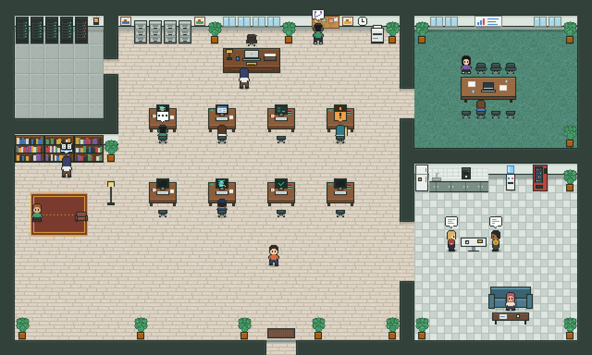

Pejabat AI peribadi you, you jadi bos.
Agent Office ialah sistem untuk you cipta "pekerja" AI (agent), bagi mereka kerja (job), dan tengok mereka buat kerja tu secara live. Apa-apa yang berisiko, mereka kena minta izin you dulu.
Agent buat kerja
Setiap agent ada peranan, model AI, dan tools sendiri. Contoh: Tester buka website you tiap malam, Coder baiki bug dan buka PR.
You approve benda risky
Command yang tak ada dalam senarai selamat, push ke main, dan seumpamanya akan berhenti dan tunggu you tekan Approve atau Reject.
Semua nampak & direkod
Setiap langkah agent jadi satu event. Board, log dan nanti office view semua dibina dari event yang sama. Refresh browser pun tak hilang apa-apa.
3 bahagian utama
Bayangkan ia macam sebuah pejabat: ada pejabat pengurusan (Hub), ada pekerja yang datang dari rumah masing-masing (Runner), dan ada skrin untuk you pantau (Web).
WebSocket
dial keluar
Runner yang sambung keluar ke Hub, bukan sebaliknya. Sebab tu nanti Mac Mini atau mesin lain boleh join melalui Cloudflare Tunnel tanpa buka port. Hari ni, hub dan runner dua-dua jalan atas PC you.
Istilah A–Z
Ini semua perkataan yang you akan jumpa dalam UI dan dalam chat dengan saya.
Agent
"Pekerja" AI. Ada nama, peranan, provider + model, system prompt, senarai tools, permission level, dan budget token harian.
Approval
Permintaan izin bila agent nak buat benda berisiko. Muncul dalam page Approvals dengan badge merah. Approve atau Reject.
Allowlist
Senarai command yang agent boleh jalankan tanpa tanya, contohnya bun test, git status. Yang lain semua minta approval.
Event
Rekod setiap benda yang berlaku: run.started, agent.tool_call, agent.needs_approval… Disimpan kekal, tak pernah diubah. Inilah "sumber kebenaran".
Handoff
Agent serah kerja kepada agent lain. Contoh: Tester jumpa page rosak, terus buat job untuk Coder dengan langkah untuk ulang bug tu.
Hub
Server pusat. Satu-satunya tempat yang pegang database dan secret.
Job
Satu tugasan untuk satu agent. Datang dari you (manual), dari jadual (schedule), atau dari agent lain (handoff).
Kill switch
Butang Pause all kat header: cancel semua run yang tengah jalan dan tahan job baru sampai you Resume.
Mock provider
"AI palsu" yang cuma dipakai oleh automated test. Dalam system you dah di-disable; semua agent guna AI betul.
OpenCode
Otak agent Coder. Dia edit code dan run test dalam repo, tapi ikut rules Agent Office: command luar allowlist jadi approval, dan push/commit dibuat oleh Agent Office.
Pairing code
Kod sekali guna (contoh K7PD-Q2XM, tamat dalam 10 minit) untuk sambung runner baru ke hub. Lepas tu runner simpan token sendiri.
Project
Produk you: ekadkahwin, Sewa Kamera, JomBelajar, CanopyTrack… Ada live URL (untuk Tester) dan repo URL (untuk Coder).
Provider
Tempat model AI: Anthropic, OpenAI, Gemini, OpenRouter, Groq, DeepSeek, Ollama, LM Studio, atau Custom. API key disimpan encrypted.
Run
Satu kali job tu dijalankan. Ada log event, output, tokens masuk/keluar, dan kos dalam USD.
Runner
Process yang jalankan agent. Boleh ada lebih dari satu, kat mesin berbeza.
Schedule
Jadual cron dalam waktu Malaysia. Contoh 0 8 * * 1-5 = setiap hari bekerja pukul 8 pagi.
Tool
Kebolehan agent: baca/tulis fail, run command, git, Gitea, browser, handoff. Setiap tool ada kategori (untuk office view) dan risk level.
Workspace
Folder peribadi untuk setiap run. Agent cuma boleh menulis di sini, tak boleh keluar.
Hidup satu job, dari mula sampai habis
Ini apa yang betul-betul berlaku bila you tekan Create job. Nama dalam huruf kecil di bawah setiap langkah ialah event yang direkod.
You buat job
Dari page New job, dari Schedule, atau agent lain buat handoff.
job.created · job.queuedHub cari runner yang free
Kalau semua runner offline atau sistem tengah paused, job tunggu dalam lajur Queued.
run.startedRunner sedia workspace dan mula kerja
Dia buat folder baru, panggil model AI, dan stream tulisan live ke skrin you.
agent.thinking · agent.messageAgent guna tools
Setiap tool call dicek dulu: input betul ke, path selamat ke, berapa tinggi risk dia.
agent.tool_call · agent.tool_resultKalau berisiko, berhenti dan tanya you
Job jadi "needs approval", badge merah naik. Takde apa-apa dijalankan sampai you buat keputusan. Kalau runner terputus masa tunggu, keputusan you tetap sampai bila dia sambung balik.
agent.needs_approval · approval.decidedHasil kerja disimpan
Output, report, screenshot atau PR jadi artifact yang boleh you buka.
artifact.createdRun tamat, tokens dan kos direkod
Kos dikira ikut harga model. Jumlah kos hari ini nampak kat header.
run.finished · agent.idle
Siapa boleh buat apa
Setiap action ada satu daripada tiga risk level. Permission level agent (safe atau review) tentukan sama ada dia perlu tanya.
Tak pernah tanya.
- Baca fail dalam workspace
- Command dalam allowlist
- Buka website (read-only)
- Tulis report akhir
Tanya kalau agent "safe". Tak tanya kalau agent "review".
- Tulis atau edit fail
- Git commit, buat branch
- Push branch biasa
- Buka PR kat Gitea
Sentiasa tanya you. Tiada pengecualian.
- Command yang tak ada dalam allowlist
- Push ke main / master
- Nanti: deploy, hantar email, publish post
- Agent tak boleh tulis di luar folder workspace dia, termasuk melalui symlink.
- Fail secret diblock:
.env*,*.pem,*.key,id_*,.ssh/, database hub. - Command dijalankan tanpa shell, jadi
&&,|,;tak boleh "curi masuk" lepas allowlist. - Command tak nampak secret you: env dibersihkan sebelum process dimulakan.
- API key dan token Gitea encrypted dalam DB, tak pernah dihantar ke browser.
- Token yang terlepas dalam log atau event automatik ditukar jadi
[REDACTED]. - Kandungan dari web, fail atau issue dianggap data. Agent diajar jangan ikut arahan dalam kandungan tu.
- Coder (OpenCode):
git push,git commit,git remotedan reset diblock terus; akses web dan folder luar repo pun diblock. Key AI sebenar tak pernah sampai OpenCode (dia cuma dapat token sementara melalui proxy kat PC you). - Kalau repo ada
opencode.jsonatau folder.opencode/sendiri, run berhenti minta approval dangerous dulu, sebab plugin dalam folder tu boleh jalan atas PC you. - Tiada Docker (pilihan you). Command yang you approve jalan atas PC you dengan permission user you, jadi baca dulu sebelum tekan Approve.
Cara guna, dari kosong
Semua arahan ni untuk PowerShell, dalam folder MyOfis. Port kat PC you dah diset macam ni:
wrangler dev (workerd)Hidupkan hub dan web
bun run dev
Kemudian buka http://127.0.0.1:5180 dan login guna nilai LOCAL_AUTH_TOKEN dalam fail .env.
Sambung runner (sekali je)
- Pergi page Runners, tekan New pairing code.
- Buka terminal kedua dan jalankan (tukar kod):
$env:PAIRING_CODE="XXXX-XXXX"; bun run dev:runner
Lepas kali pertama, runner dah ingat token dia. Lain kali cukup:
bun run dev:runner
Patut nampak: runner "main-pc" status online kat page Runners. (Kalau dah online dari test saya, terus guna.)
Job pertama: Echo
New job → agent Echo → paste apa-apa teks → Create job.
Patut nampak: teks keluar sedikit demi sedikit, run tamat dengan status done, tokens direkod. Refresh browser, semua masih ada.
Tester dan Coder betul
- Projects → New project: masukkan live URL (website projek) dan repo URL (Gitea).
- New job → agent Tester → pilih projek → contoh: "Smoke test projek ni".
- Buka run tu: screenshot desktop dan mobile serta report keluar dalam bahagian Results.
- Kalau Tester jumpa page rosak, dia handoff kepada Coder. Coder buat branch, dan OpenCode baiki code.
Approval: bila OpenCode nak jalankan command luar allowlist Coder, badge merah naik kat Approvals. Reject = command tu tak jalan. Lepas siap, Agent Office buka PR kat Gitea (perlukan Settings → Integrations).
Masukkan API key sebenar
Settings → LLM providers → pilih preset (contoh Anthropic) → paste API key → Save. Kemudian kat Agents, tukar provider/model agent tu.
Ingat: key disimpan encrypted. Kalau you tukar SECRETS_KEY dalam .env, key kena masuk semula.
Jadual, projek, Gitea
- Schedules: buat jadual (ada preset "Weekdays 08:00", "Every night 02:00"), atau tekan Run now untuk cuba terus.
- Projects: masukkan projek you dengan live URL dan repo URL.
- Settings → Integrations: URL dan token Gitea untuk Coder, bila Gitea you dah siap.
Pejabat pixel: baca apa agent tengah buat
Dashboard sekarang terus buka pada Office. Setiap agent ialah satu watak dalam pejabat. Watak cuma tunjuk apa yang berlaku (dari event yang sama dengan Board), jadi dia tak pernah ganggu kerja agent. Nak versi senarai biasa? Tekan Board. Pilihan you diingat dalam browser.

| Jalan ke meja, duduk | Run dah mula. Ada bubble kopi = job tengah tunggu runner. |
| Menaip, monitor berkelip | Guna tools code, shell, git atau menulis. |
| Bubble … | Tengah berfikir. |
| Bubble globe | Tengah buka web page (browser check). |
| Angkat tangan + ! berdenyut | Perlu approval you. Klik "!" untuk terus approve atau reject. |
| Bawa fail ke meja bos | Run siap. Kertas masuk tray you. |
| Pening, bintang atas kepala | Run gagal. Monitor tunjuk ✗ merah. |
| Bawa dokumen ke meja agent lain | Handoff: serah kerja kepada agent tu. |
| Jalan keluar ikut pintu | Agent di-pause atau dah lebih budget token hari ini. |
| Bubble zzz di pantry | Semua sistem tengah paused (kill switch). |
- Klik watak: keluar panel dengan job sekarang, live log, 5 tool call terakhir, token + kos hari ini, dan butang Give a job, Cancel run, Pause agent.
- Drag untuk gerakkan pandangan. Butang − / + untuk zoom (zoom sentiasa nombor bulat supaya pixel tajam).
- Watak kadang-kadang lari laju? Itu sengaja. Bila banyak benda berlaku serentak, watak skip animasi lama dan kejar keadaan terbaru dalam masa 2 saat.
- Jimat bateri: bila window tak focus, pejabat turun ke 30 fps. Bila tab tersembunyi, dia berhenti terus.
- Tukar art: ganti fail dalam folder
maps/dan reload page. Tak perlu build semula. Bacamaps/README.md. - Rupa watak: field sprite agent:
guard,tester,coder,marketer,person-1…person-8. Kalaudefault, sistem pilih satu ikut nama agent.
Marketing, chat dan Telegram
Marketing tulis copy untuk produk you berdasarkan brief projek. Dia tak pernah post apa-apa: semua jadi draf dalam inbox Drafts untuk you approve, edit atau reject. Edit dan feedback you jadi "memori gaya" dia.
Isi brief projek
Projects → Brief pada kad projek. Isi apa produk tu, target, harga, lokasi, CTA (contoh WhatsApp), tone, bahasa ikut platform, benda yang tak boleh cakap, dan contoh posting yang you suka. Ada butang "Start from the example" (Sewa Kamera).
Kenapa penting: Marketing cuma guna fakta dari brief. Takde harga dalam brief = dia tak sebut harga.
Bagi kerja (New job atau Chat)
New job → pilih Marketing → pilih Kind of work → pilih projek → tulis arahan biasa. Contoh arahan:
- "3 caption TikTok untuk promo sewa ZV-E10 cuti sekolah. Santai, Manglish, ada CTA WhatsApp."
- "Skrip video 30 saat: tunjuk unboxing kamera + flash + tripod."
- "Content calendar minggu depan untuk IG dan TikTok."
- "Promo Raya: 3 caption IG + 1 skrip TikTok."
Tiru gaya penulisan (Writing-style analysis)
Letak 3–10 contoh posting dalam brief (atau paste dalam arahan), lepas tu pilih Writing-style analysis: "Analisis gaya penulisan contoh posting dalam brief, lepas tu tulis 2 posting IG ikut gaya tu."
Marketing tulis nota gaya (panjang ayat, emoji, cara buka hook, CTA). Bila you approve draf nota gaya tu, ia masuk dalam brief dan dipakai untuk semua draf seterusnya.
Dia belajar gaya, bukan copy ayat: sistem tolak draf yang copy 12+ perkataan berturut dari contoh. Guna contoh orang lain sebagai inspirasi; jangan menyamar jadi orang tu.
Semak di Drafts
Setiap draf ada semakan sendiri (fakta, feature, overclaim, tone). Edit terus dalam kotak → Approve my edit, atau Reject… dengan sebab ("terlalu jual", "guna lebih Manglish"). Copy untuk paste ke TikTok/IG.
Chat dengan agent
Menu Chat: borak dengan mana-mana agent. Setiap mesej jadi job kecil (nampak dalam pejabat, kira budget). Agent ingat mesej sebelum dalam perbualan yang sama.
Telegram
Buat bot
Telegram → @BotFather →
/newbot→ copy token. Jangan share token dengan sesiapa.Masukkan dalam Agent Office
Settings → Integrations → Telegram → paste token → Save.
Dapatkan chat id
Hantar
/idkepada bot you. Paste nombor yang dia balas → Save → Send test.Siap
Approval datang dengan butang ✅/❌ (cuma chat you diterima, butang bertandatangan). Juga: laporan pagi, run gagal, draf baru, budget habis.
/statusuntuk ringkasan.
Feature log & budget
- PR di-merge di Gitea → dalam 5 minit hub nampak → Coder tulis nota ringkas untuk customer (lepas CI lulus) → Tester ambil screenshot → Marketing buat draf announcement. Semua tunggu you.
- Nota manual: Projects → Feature log → tulis sendiri; ia pun cetuskan screenshot + draf.
- Budget token harian setiap agent (Agents → Edit; 0 = tiada had). Habis budget: run berhenti, agent "balik rumah" ikut pintu, job tunggu esok (waktu Malaysia).
- Office view: Marketing jalan ke kabinet fail bila baca brief, pin draf di whiteboard; Coder pin nota feature di notice board.
Agent belajar sendiri (gaya Hermes Agent)
Agent yang ada tools belajar (Coach dan Marketing secara default) makin lama makin kenal you, ikut cara Hermes Agent dari Nous Research. Semua benda penting tunggu you approve dulu.
- Memori: setiap agent ada nota sendiri (max 2200 aksara), dan semua agent kongsi satu profil you (max 1375 aksara), contoh "suka Manglish santai", "tak nak emoji kat Facebook". Kalau dah penuh, agent gabungkan nota lama, bukan tambah je. Benda yang nampak macam arahan pelik atau secret, dia tolak.
- Tengok / edit memori: klik watak dalam pejabat → bahagian Memory. Boleh edit, buang, atau tambah sendiri.
- Skills: cara kerja yang boleh guna semula, disimpan sebagai
skills/<nama>/SKILL.md(format sama dengan Hermes). Agent cuma cadang. You approve atau reject di menu Skills, siap dengan diff dan amaran kalau skill suruh download atau delete benda. - Import dari Hermes: Skills → Import SKILL.md → paste. Terus boleh guna.
- Cari kerja lama: agent boleh cari job dan chat lama sendiri (contoh "caption macam minggu lepas").
- Muhasabah lepas kerja: lepas job besar (5+ tool call) atau setiap 5 mesej chat, agent tanya diri sendiri "ada benda patut simpan tak?". Makan sikit token. Boleh off per agent (Agents → Edit → Learn after work).
- Nak approve semua perubahan memori? On suis "Ask me before agents change their memory" di page Skills.
Sambung PC lain (runner) dan Hermes Agent
Ada dua cara guna PC lain. Runner: agent Agent Office buat kerja kat PC tu, ikut approval dan peraturan kita. Hermes Agent: Hermes kat PC tu jadi satu "otak" (provider) untuk agent dalam pejabat.
A. Runner, satu baris je
- Buka Runners → Connect a PC. Keluar satu kod (sah 10 minit) dan dua arahan.
- Kat PC lain, buka terminal, paste satu arahan ikut OS. Windows:
irm "http://IP-PC-HUB:8788/install.ps1?code=…" | iex. Linux/Mac:curl -fsSL "…/install.sh?code=…" | sh. - Skrip pasang Bun kalau belum ada, download runner dari hub, pair, dan set supaya auto start setiap kali PC tu hidup. Tak perlu admin. Page Runners terus tunjuk "… is connected".
- Penting: hub default cuma dengar kat PC sendiri. Untuk PC lain dalam WiFi yang sama, letak
HUB_HOST=0.0.0.0danPUBLIC_BASE_URL=http://IP-PC-HUB:8788dalam.env, lepas tu restart hub. Dari luar rumah, guna Cloudflare Tunnel. - Nak update runner kat PC tu? Run je balik arahan dengan kod baru. Pairing kekal sama.
- Page Runners tunjuk program yang ada kat setiap PC (git, node, ffmpeg, blender…).
B. Hermes Agent sebagai provider
- Kat PC Hermes, tambah dalam
~/.hermes/.env:API_SERVER_ENABLED=true,API_SERVER_KEY=…(rentetan rawak panjang),API_SERVER_HOST=0.0.0.0, lepas tu jalankanhermes gateway. - Kat Agent Office: Settings → Providers → Add → Hermes Agent. Tukar IP, isi key, model
hermes-agent. - Buat agent baru guna provider tu, tanpa tools (Hermes guna tools dia sendiri). Lepas tu boleh chat atau bagi job macam agent lain.
- Ingat: apa yang Hermes buat kat PC dia tak lalu approval Agent Office. Hadkan dalam setting Hermes sendiri. Panduan penuh:
docs/hermes-agent.md.
Agent-agent dalam pejabat
Agent ujian: ringkaskan teks. Guna untuk pastikan sistem jalan dengan lancar.
DevOps. Check kesihatan sistem setiap hari bekerja 8 pagi, tulis morning report dalam bahasa mudah.
Pakai uniform guard dengan topiQA. Buka setiap live URL tiap malam guna browser sebenar, ambil screenshot, banding dengan semalam. Kalau rosak, handoff kepada Coder.
Lab coat putih + cermin mataBaiki bug dari handoff atau issue Gitea guna OpenCode. Agent Office buat branch, commit dan PR. Tak pernah push ke main.
Hoodie hijau + headphoneTulis caption, skrip video, content calendar, promo dan tiru gaya penulisan ikut brief projek. Tak pernah publish sendiri; semua jadi draf untuk you.
Kabinet fail → meja → whiteboardKawan latihan bercakap English. Tanya soalan spontan, betulkan ayat jadi lebih natural, ajar frasa berguna. Guna melalui Chat, dengan 🎤.
Status & fasa
Core loop
Job → runner → event live → tokens/kos → refresh tak hilang state.
Agent sebenar + keselamatan
Tools, approvals, scheduler, handoff, Gitea, Playwright, Pak Guard / Tester / Coder (OpenCode).
Office view + UI baru
Pejabat pixel-art (art dilukis dalam code): agent jalan, duduk, menaip, angkat tangan untuk approval, hantar kerja ke meja you. Klik watak untuk panel. Plus rupa baru seluruh app (light + dark, desktop + phone).
Marketing + projek + Telegram
Brief projek, feature log, draf content dengan feedback, chat dengan agent (+ English Coach), approve dari Telegram, budget token.
Agent belajar (gaya Hermes)
Memori bertingkat (nota sendiri + profil you), Skills (SKILL.md) yang you approve, import dari Hermes, cari kerja lama, muhasabah lepas kerja. Belum: agent Researcher, agent tanya agent lain, 3D.
Buka ke luar
Login dari phone melalui Cloudflare Access (cuma email you), Cloudflare Tunnel, runner kedua di PC lain, Replay (menu Replay atau butang "Replay in the office" pada run lama; 1x/4x/16x). Memori agent kini di Phase 4.5. Panduan: docs/cloudflare-tunnel.md.
Kalau ada masalah
Office view kosong: "The office art did not load"
Fail art dalam folder maps/ hilang atau rosak. Build semula: bun run --cwd apps/web office:assets. Kalau you set MAPS_DIR dalam .env, pastikan dia tunjuk ke folder yang betul. Board view tetap boleh guna.
Watak takde dalam pejabat
Agent yang disabled (Pause agent) atau dah lebih budget hari ini akan keluar ikut pintu. Enable semula di page Agents, nanti dia masuk balik.
Buka 5173, keluar app lain
Betul, 5173 dipakai app lain. Agent Office kat 5180.
"Port 5180 is in use" masa bun run dev
Ada benda lain dah pakai 5180. Tukar WEB_DEV_PORT dalam .env ke port lain (contoh 5181), dan buka port tu.
Hub tak start: EADDRINUSE
Port hub dah dipakai, biasanya wrangler dev kat 8787. .env you dah guna 8788. Kalau 8788 pun sibuk, tukar HUB_PORT, PUBLIC_BASE_URL dan HUB_URL serentak.
Job stuck kat Queued
Tiga sebab biasa: (1) takde runner online, check page Runners; (2) sistem tengah paused, ada jalur kuning kat atas; (3) agent tu disabled.
Run fail: "provider is missing" atau API key error
Agent tu guna provider yang belum ada key. Pergi Settings → LLM providers, masukkan key, atau tukar agent ke provider mock untuk test.
Badge Approvals tak hilang
Approval kekal sampai you Approve, Reject, atau run tu dicancel. Kalau run dicancel, approval jadi expired secara automatik.
Kenapa perlu Node juga, bukan Bun je?
Playwright (browser untuk Tester) tergantung atas Bun kat Windows. Jadi browser je jalan dalam process Node kecil; selebihnya kekal Bun. PC you dah ada Node 24.
Coder fail: "OpenCode is not installed"
Install OpenCode kat mesin runner: npm install -g opencode-ai, kemudian restart runner. Page Runners akan tunjuk opencode dalam runtimes.
Coder fail: "No repository for this job"
Coder kerja dalam repo projek. Masa buat job, pilih Project yang ada repo URL (Projects page). Coder tak akan teka URL repo.
Boleh guna npm?
Untuk jalankan project, tak. Project ni bergantung pada Bun (database, server, test). Command dia sama macam npm: bun install, bun run dev.
Senarai arahan
| bun install | Pasang semua library (sekali, atau lepas tarik code baru) |
| bun run dev | Hub + Web UI dengan auto-reload. Buka 127.0.0.1:5180 |
| bun run dev:runner | Hidupkan runner (terminal kedua) |
| bun test | Jalankan semua test (sekarang 175+ test) |
| bun run --cwd apps/web office:assets | Lukis semula art pejabat dari code ke folder maps/ |
| bun run typecheck | Check TypeScript seluruh project |
| bun run build | Build Web UI untuk production |
| bun run start:hub | Hub mode production (serve UI dari build) |
| bun run db:generate | Buat migration baru lepas ubah schema database |